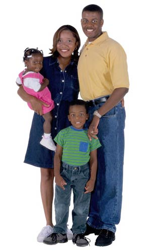

HomeHero At Hand for Peace of Mind™
Home Safety Plans
Know the Drill
When fire strikes, escaping and preserving the lives of all members of your family is your first priority. This will be easier if you have a plan that everyone knows about, understands and has practiced. HomeHero™ has selected fire safety and prevention sites to help you develop an escape plan and improve your fire awareness and preparedness for a fire emergency in your home.
Fire Safety Escape Plan
Consider making a fire escape plan that identifies at least two exits from each room of your house and includes a safe outside meeting place for the entire family to congregate.
Involve your children when developing this plan. Make sure they pay attention so it will help them remember more details.
Fire safety authorities tell us to get out of the house first and then call for assistance. Discuss with your family the dangers of smoke, and learn what is required to escape if there is smoke in your house.
Also educate yourself on the importance of recognizing fire conditions such as heated doors, smoke coming from doors or furniture and clothes catching on fire. Learn exactly what you should do to protect yourself and your family.
Carbon Monoxide
Fact: Carbon monoxide poisoning is the most common type of fatal poisoning in the United States. >>
Carbon Monoxide poisoning is an important fire safety issue and the U.S. Fire Administration/FEMA recommends that each home should have at least one UL approved carbon monoxide detector on each level of your home.
Sources of this toxic gas are more common than most of us are aware of. They present a significant danger because of the difficulty to detect its presence. Odorless, colorless, tasteless and non-irritating, carbon monoxide injures people each year without warning.
Common sources of carbon monoxide that can cause danger include house fires, furnaces, wood and coal stoves, gas fireplace logs, hot water heaters fueled by propane or natural gas, motor vehicle exhaust, and propane-fueled equipment such as portable camping stoves and gasoline powered generators to name a few.
Learning Together
Being truly prepared for a home fire emergency means every member of the family knows what to expect and how to respond in any situation. HomeHero™ has identified some authoritative sites offering interesting techniques and suggestions for how to involve your whole family and make learning how to be better prepared interesting and fun.
Try to visit two or three of these sites, as each will offer additional ideas and items to consider. HomeHero™ wants you to have the peace of mind that comes from knowing that you and your family can respond to any home fire emergency with knowledge and confidence.
- What are the leading sources of house fires?
- How fast does a fire double?
- What is the required reaction time to keep a fire under control?
- What is the recommended number of Fire extinguishers?
- How many U.S. homes have fire extinguishers?
- How many U.S. homes have smoke alarms?
- How many U.S.homes have CO alarms?
- What are the other impacts besides death of CO poisoning?